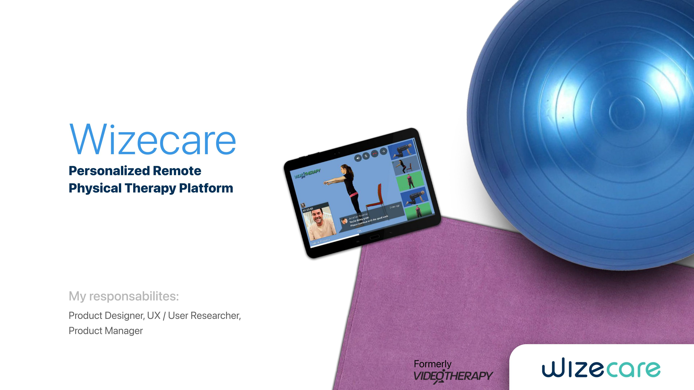
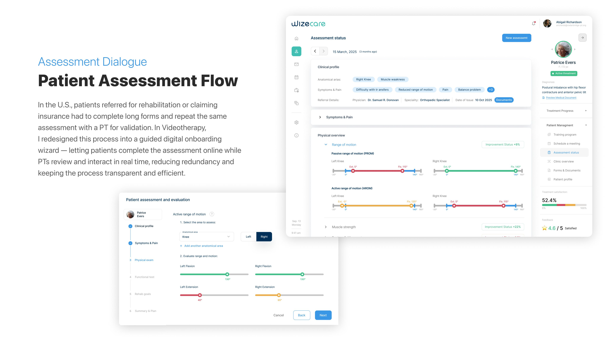
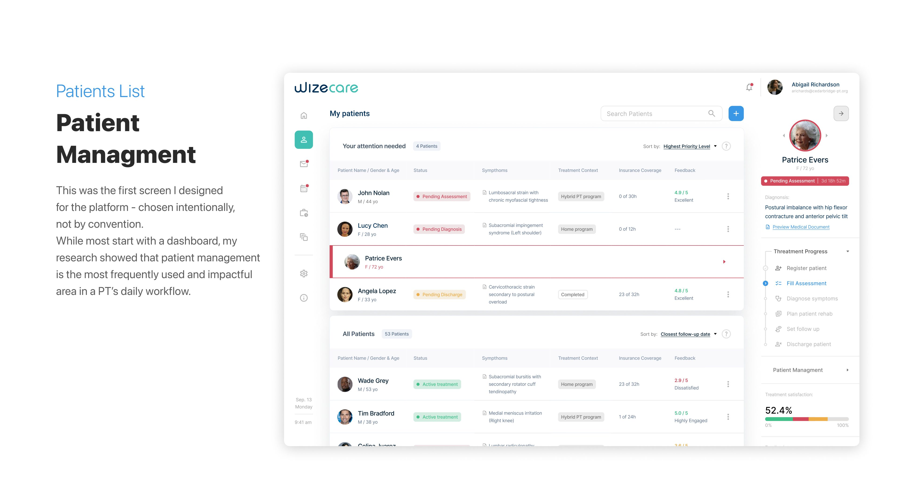
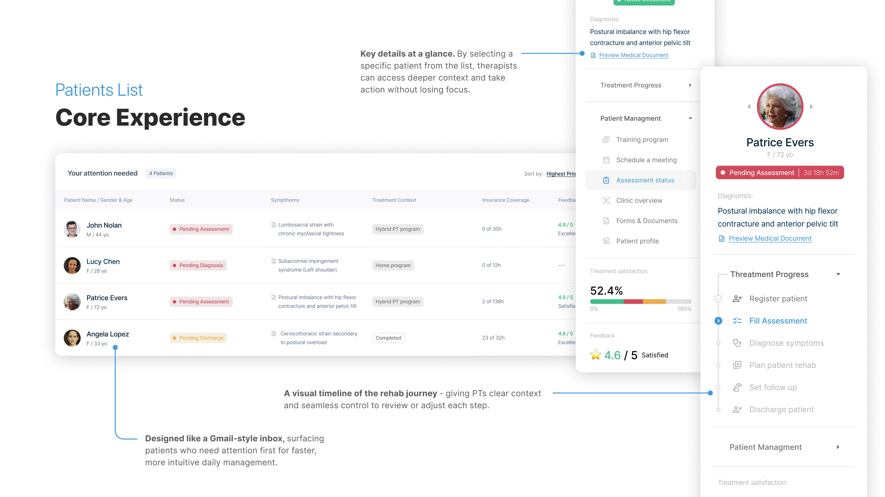
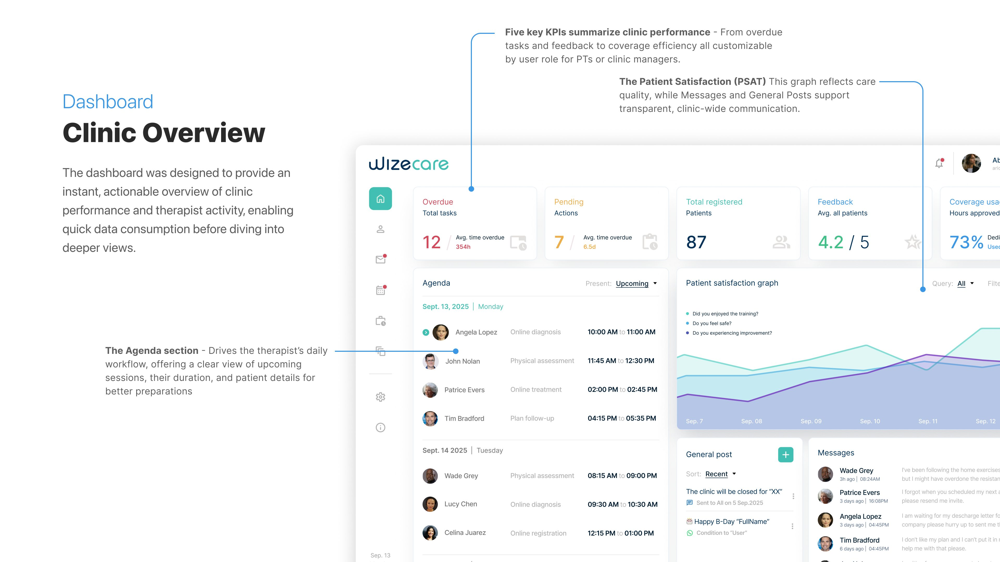
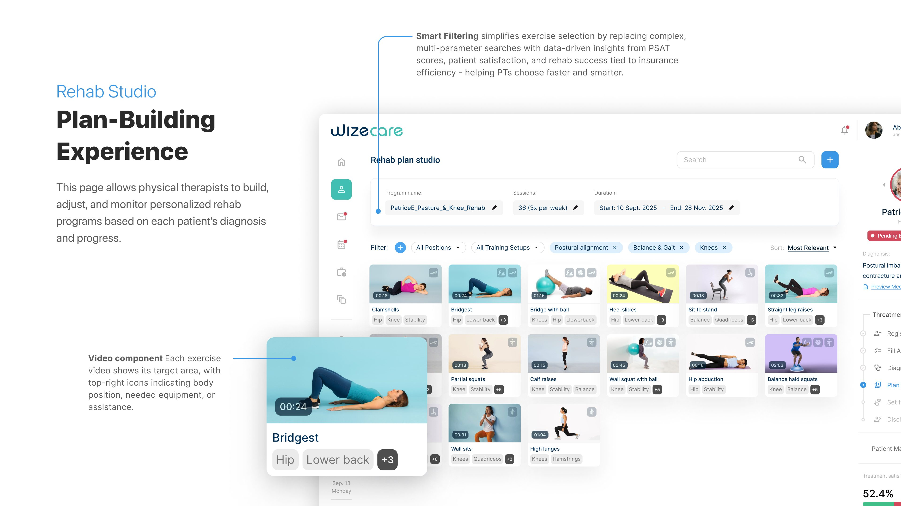
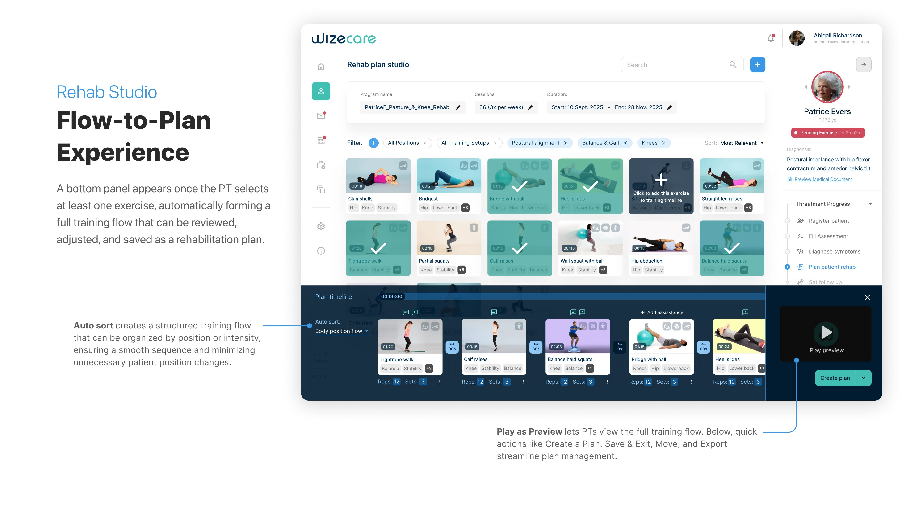

Case Study 01
A digital health platform enabling physical therapists to treat and monitor patients remotely — from a Microsoft Kinect prototype to adoption across major HMOs.
WizeCare is a digital health platform that enables physical therapists to treat and monitor patients remotely, while patients can access guided therapy anytime and anywhere. The idea originated with the use of the Microsoft Kinect camera and its skeleton tracking technology to analyze patient movement and posture — an innovation that evolved into a comprehensive platform adopted by leading HMOs worldwide.

Building a platform that helps PTs manage larger caseloads efficiently, reduce unnecessary rehab costs, and strengthen patient trust through transparent progress tracking and tailored exercise programs.
As both Product Designer and PM, I designed the flows, MVP, and GA release while leading strategy and roadmap. I validated with PTs and patients, and drove Product-Led Growth through CSAT feedback loops.
01
Insurance Exposed to Rehab Fraud
Insurance companies pay for PT sessions without being able to verify whether claimed rehab hours were truly necessary — creating fraud risk and financial losses.
Affected: Insurance companies
02
Adherence Gap in Physical Therapy
Most rehab (70–80%) happens outside the clinic, yet up to 65% of patients don't follow their programs. This leads to misreporting, longer recovery, and disputes with insurers.
Affected: Physical therapists, patients
03
Limited Visibility Beyond the Clinic
Clinic managers struggle to monitor the full rehab journey. Unmonitored processes lead to patient complaints, lower satisfaction, and financial losses.
Affected: Clinic managers, patients
Conducted research across Israeli HMOs (Maccabi, Meuhedet), private clinics, and U.S. online sessions — covering clinic managers, PTs across specialties, and diverse patient groups.
Observed therapists' daily tasks — assessments, rehab planning, documentation — and mapped digital workflows to identify adoption barriers
Learned that the full patient rehab journey is the common ground across all PT workflows, not the dashboard
Identified four key UX challenges: low trust in technology, time-constrained interactions, app felt unnatural, and need for immediate clinic insights
"I oversee many patients and therapists, but once rehab leaves the clinic, I lose visibility. When issues come up, it always falls back on us."
Natalie G., Physical Therapist
"I spend too much time repeating redundant assessments, and irrelevant questions only slow the process."
Richard P. Smith, Physical Therapist
Step 01
Served as both PM and Designer. Conducted competitive research and built a prioritization matrix to define MVP scope and the future roadmap — balancing essential features (patient management, assessment flow, data-driven plans) against nice-to-haves.

Step 02
Translated strategic decisions into a clear experience path. The flow validates task order, exposes friction points early, and bridges strategy to data architecture — defining what information supports each step before touching structure.

Step 03
Structured the system's information hierarchy to define how patient data, assessments, and treatment plans connect across modules — ensuring consistency, scalability, and smooth data flow between users and features.

Step 04
The first screen designed — intentionally, not by convention. Research showed patient management is the most frequently used and impactful area in a PT's daily workflow. Designed like a Gmail-style inbox, surfacing patients who need attention first. Each patient card provides key details at a glance, with deeper context and actions available without losing focus.
Step 05
Five key KPIs summarize clinic performance — from overdue tasks and feedback to coverage efficiency — all customizable by user role for PTs or clinic managers. The Agenda section drives the therapist's daily workflow with a clear view of upcoming sessions.

Step 06
Smart filtering replaces complex multi-parameter searches with data-driven insights from PSAT scores, patient satisfaction, and rehab success tied to insurance efficiency. A bottom panel automatically forms a full training flow once exercises are selected — reviewed, adjusted, and saved as a rehabilitation plan.


Customer success wins showing how research and experience drive measurable outcomes.
67%
Cost reduction per patient
+92%
Onboarding success rate
+80%
Enhanced PT capacity vs. in-clinic care
+50%
Patient adherence success
6K+
Patients trusted worldwide
5
New competitors entered the market since 2018 GA — validating the direction
Adopted by leading HMOs and health systems — including Clalit, Maccabi, Meuhedet, Cleveland Clinic, and others across the U.S. and Europe.